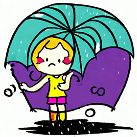

Ребёнок не может справится с депрессией: как помочь ему
Вы спрашиваете - мы отвечаем
Вам, как родителю, крайне важно усмотреть первые признаки депрессии своего ребёнка. Вот наиболее многоговорящие из них:
- раздражительность, злость, враждебность;
- беспомощность;
- потеря интереса к хобби и всему, что раньше доставляло удовольствие;
- изменения в привычках еды и сна;
- чувство бесполезности и вины;
- недостаток мотивации и энтузиазма;
- плохая успеваемость;
- сложности с концентрацией;
- Низкая самооценка
Вот шаги, которые помогут вашему ребёнку справиться с его/её болезнью:
- Способствуйте формированию у ребёнка здоровых привычек. Даже легкая регулярная физическая активность может уменьшить симптомы депрессии. Сон также имеет важное значение для всех детей, и особенно важен у ребенка с депрессией
- Уделите особое внимание общению с ребенком. Поговорите с ним/ней о тревогах, подчеркните свою безоговорочную поддержку. Создайте среду, в которой ребёнок сможет делиться с вами своими проблемами, и будет уверен, что его выслушают и поймут.
- Поощряйте социальную активность. Дети, подверженные депрессии, склонны избегать своих друзей и другой социальной активности. Однако изоляция только усугубляет ситуацию, поэтому сделайте все возможное, чтобы этого не произошло.
- Имейте реалистичные ожидания. Многие дети склонны к самобичеванию, если они не в состоянии жить по выдуманным ими нереалистичным стандартам - в учёбе, в спорте и тд. Пусть ваш ребенок знает, что это нормально - быть несовершенным.